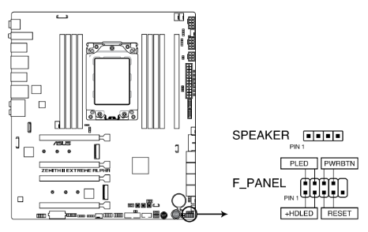
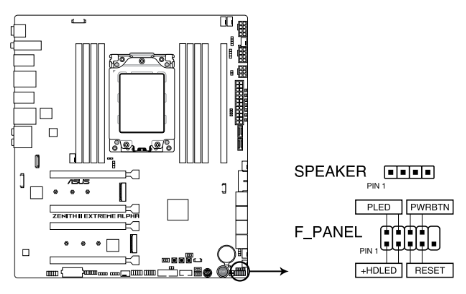

Ventoinhas da caixa

Nota:
As ventoinhas da caixa conectam-se CHA_FAN1
Exemplo de exposição de ventoinhas:

Nota:
O cooler geralmente é instalado na parte superior da caixa do nosso computador, como é mostrado na imagem.
Fonte de alimentação: Corsair RM1000x (2021) 1000 W 80+ Gold Certified Fully Modular ATX Power Supply

Nota:
A fonte de alimentação geralmente tem 24 pinos
Conexões ATX

Nota:
Conectar os plugues de alimentação de 8 pinos ou conectar os plugues de alimentação de 8 e 4 pinos (em outro conector de 8 pinos)
Conector de E/S frontal
- ASUS Q - Conector

- Conector USB 3.2 geração 2

Nota:
Este conector sabemos que encaixou quando empurramos e ouvimos um click
- Conector USB 3.2 geração 1

- Conector USB 2.0

- Conector áudio do painel frontal

- Conector de alto-falante do sistema

Botões do painel frontal e restantes ligações

Lara Pires
PI1
CFT
- Conector USB 2.0
- Conector áudio do painel frontal
- Conector de alto-falante do sistema
Botões do painel frontal e restantes ligações

Lara Pires
PI1
CFT